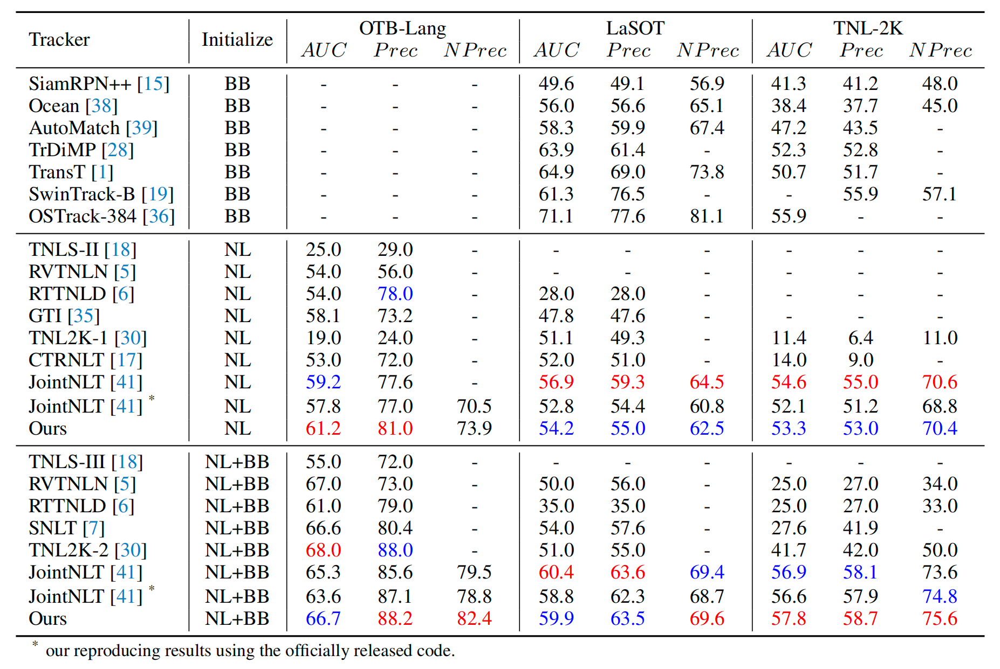
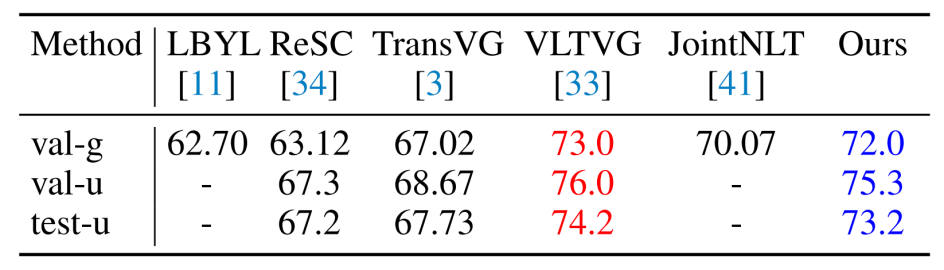

<!DOCTYPE html>
<html>
<head>
  <meta charset="utf-8">
  <meta name="description"
        content="Context-Aware Integration of Language and Visual References for Natural Language Tracking.">
  <meta name="keywords" content="human interaction, tracking and detection">
  <meta name="viewport" content="width=device-width, initial-scale=1">
  <title>Context-Aware Integration of Language and Visual References for Natural Language Tracking</title>

  <!-- Global site tag (gtag.js) - Google Analytics -->
  <script async src="https://www.googletagmanager.com/gtag/js?id=G-PYVRSFMDRL"></script>
  <script>
    window.dataLayer = window.dataLayer || [];

    function gtag() {
      dataLayer.push(arguments);
    }

    gtag('js', new Date());

    gtag('config', 'G-PYVRSFMDRL');
  </script>

  <link href="https://fonts.googleapis.com/css?family=Google+Sans|Noto+Sans|Castoro"
        rel="stylesheet">

  <link rel="stylesheet" href="./static/css/bulma.min.css">
  <link rel="stylesheet" href="./static/css/bulma-carousel.min.css">
  <link rel="stylesheet" href="./static/css/bulma-slider.min.css">
  <link rel="stylesheet" href="./static/css/fontawesome.all.min.css">
  <link rel="stylesheet"
        href="https://cdn.jsdelivr.net/gh/jpswalsh/academicons@1/css/academicons.min.css">
  <link rel="stylesheet" href="./static/css/index.css">
  <link rel="icon" href="./static/images/favicon.svg">

  <script src="https://ajax.googleapis.com/ajax/libs/jquery/3.5.1/jquery.min.js"></script>
  <script defer src="./static/js/fontawesome.all.min.js"></script>
  <script src="./static/js/bulma-carousel.min.js"></script>
  <script src="./static/js/bulma-slider.min.js"></script>
  <script src="./static/js/index.js"></script>
</head>
<body>
<!-- 
<nav class="navbar" role="navigation" aria-label="main navigation">
  <div class="navbar-brand">
    <a role="button" class="navbar-burger" aria-label="menu" aria-expanded="false">
      <span aria-hidden="true"></span>
      <span aria-hidden="true"></span>
      <span aria-hidden="true"></span>
    </a>
  </div>
  <div class="navbar-menu">
    <div class="navbar-start" style="flex-grow: 1; justify-content: center;">
      <a class="navbar-item" href="https://keunhong.com">
      <span class="icon">
          <i class="fas fa-home"></i>
      </span>
      </a>

      <div class="navbar-item has-dropdown is-hoverable">
        <a class="navbar-link">
          More Research
        </a>
        <div class="navbar-dropdown">
          <a class="navbar-item" href="https://hypernerf.github.io">
            HyperNeRF
          </a>
          <a class="navbar-item" href="https://nerfies.github.io">
            Nerfies
          </a>
          <a class="navbar-item" href="https://latentfusion.github.io">
            LatentFusion
          </a>
          <a class="navbar-item" href="https://photoshape.github.io">
            PhotoShape
          </a>
        </div>
      </div>
    </div>

  </div>
</nav> -->


<section class="hero">
  <div class="hero-body">
    <div class="container is-max-desktop">
      <div class="columns is-centered">
        <div class="column has-text-centered">
          <h1 class="title is-1 publication-title">Context-Aware Integration of Language and Visual References for Natural Language Tracking</h1>
          <div class="is-size-5 publication-authors">
            <span class="author-block">
              <a href="">Yanyan Shao</a><sup>1</sup>,</span>
            <span class="author-block">
              <a href="https://person.zju.edu.cn/en/yeqi/">Qi Ye</a><sup>2</sup>,</span>
            <span class="author-block">
              <a href=" ">Shuting He</a><sup>2</sup>,
            </span>
            <span class="author-block">
              <a href=" ">Qi Ye</a><sup>3</sup>,
            </span>
            <span class="author-block">
              <a href=" ">Yuchao Feng</a><sup>1</sup>,
            </span>
            <span class="author-block">
              <a href=" ">Wenhan Luo</a><sup>4</sup>,
            </span>  
            <span class="author-block">
              <a href=" ">Jiming Chen</a><sup>1,3</sup>,
            </span>
          </div>

          <div class="is-size-5 publication-authors">
            <span class="author-block"><sup>1</sup>Zhejiang University of Technology</span>
            <span class="author-block"><sup>2</sup>Nanyang Technological University</span>
            <span class="author-block"><sup>3</sup>Zhejiang University</span>
            <span class="author-block"><sup>4</sup>The Hong Kong University of Science and Technology</span>
          </div>

          <div class="column has-text-centered">
            <div class="publication-links">
              <span class="link-block">
                <a href="https://arxiv.org/pdf/2403.19975"
                   class="external-link button is-normal is-rounded is-dark">
                  <span class="icon">
                      <i class="ai ai-arxiv"></i>
                  </span>
                  <span>arXiv</span>
                </a>
              </span>
              <!-- Video Link. -->
              <!-- <span class="link-block">
                <a href="https://youtu.be/sZ_6KXDwxvo"
                class="external-link button is-normal is-rounded is-dark"> -->
                <!-- <a href="https://www.youtube.com/watch?v=cDTl51qLmLg&feature=youtu.be"
                   class="external-link button is-normal is-rounded is-dark"> -->
                  <!-- <span class="icon">
                      <i class="fab fa-youtube"></i>
                  </span>
                  <span>Video</span>
                </a>
              </span> -->
              <!-- Code Link. -->
              <span class="link-block">
                <a href="https://github.com/twotwo2/QueryNLT"
                   class="external-link button is-normal is-rounded is-dark">
                  <span class="icon">
                      <i class="fab fa-github"></i>
                  </span>
                  <span>Code</span>
                  </a>
              </span>
              <!-- Dataset Link. -->
              <!-- <span class="link-block">
                <a href="https://github.com/google/nerfies/releases/tag/0.1"
                   class="external-link button is-normal is-rounded is-dark">
                  <span class="icon">
                      <i class="far fa-images"></i>
                  </span>
                  <span>Data</span>
                  </a> -->
            </div>

          </div>
        </div>
      </div>
    </div>
  </div>
</section>

<section class="hero teaser">
  <div class="container is-max-desktop">
    <div class="hero-body">
      <p></p>
      <h2 class="subtitle has-text-centered" style="font-size: 16px">
        Given a video sequence, the tracking object is characterized as “white bird on the left” of the initial frame. Existing
        two-step approaches separately perform language-search matching (a) and appearance-search matching (b). However, “on the
        left” which is inconsistent with the current target and the background contained in the grounded target may confuse the identification of the target. In contrast, our QueryNLT (c) forms a dynamic and context-aware query for target localization by integrating visual and language references. (Zoom in for a better view).
      </h2>
    </div>
  </div>
</section>


<section class="hero teaser">
  <div class="container is-max-desktop">
    <div class="hero-body">
      <p></p>
      <h2 class="subtitle has-text-centered" style="font-size: 16px">
        Overview of our proposed framework. It comprises three key components: a feature extraction module for extracting image and
        text features, a prompt modulation module that generates precise appearance and language descriptions of the target, and a target decoding
        module that jointly establishes the correlation between the search image and the multi-modal target prompts for target retrieval.
      </h2>
    </div>
  </div>
</section>


<section class="section">
  <div class="container is-max-desktop">
    <!-- Abstract. -->
    <div class="columns is-centered has-text-centered">
      <div class="column is-four-fifths">
        <h2 class="title is-3">Abstract</h2>
        <div class="content has-text-justified">
          <p>
            Tracking by natural language specification (TNL) aims
            to consistently localize a target in a video sequence
            given a linguistic description in the initial frame. Existing methodologies perform language-based and templatebased matching for target reasoning separately and merge
            the matching results from two sources, which suffer from
            tracking drift when language and visual templates missalign with the dynamic target state and ambiguity in the
            later merging stage. To tackle the issues, we propose a joint
            multi-modal tracking framework with 1) a prompt modulation module to leverage the complementarity between
            temporal visual templates and language expressions, enabling precise and context-aware appearance and linguistic
            cues, and 2) a unified target decoding module to integrate
            the multi-modal reference cues and executes the integrated
            queries on the search image to predict the target location in
            an end-to-end manner directly. This design ensures spatiotemporal consistency by leveraging historical visual information and introduces an integrated solution, generating
            predictions in a single step. Extensive experiments conducted on TNL2K, OTB-Lang, LaSOT, and RefCOCOg validate the efficacy of our proposed approach. The results
            demonstrate competitive performance against state-of-theart methods for both tracking and grounding.
          </p>
          <!-- <p>
            To address the limitations, in this paper, we propose to leverage spatio-temporal information of 
            hand-object interaction to track interactive objects under these challenging cases.  
            Without prior knowledge of the general objects to be tracked like object tracking problems, 
            we first utilize the spatial relation between hands and objects to adaptively discover 
            the interacting objects from the scene. 
            Second, the consistency and continuity of the appearance of objects between successive frames are 
            exploited to track the objects. With this tracking formulation, our method also benefits from training
            on large-scale general object tracking datasets. We further curate a video-level hand-object interaction
            dataset for testing and evaluation from 100DOH. 
          </p>
          <p>
            The quantitative results demonstrate that our proposed
            method outperforms the state-of-the-art methods. Specifically, in scenes with continuous interaction with
            different objects, we achieve an impressive improvement of about 10% as evaluated using the Average 
            Precision (AP) metric. Our qualitative findings also illustrate that our method can produce more 
            continuous trajectories for interacting objects.
          </p> -->
        </div>
      </div>
    </div>
    <!--/ Abstract. -->

    <!-- Paper video. -->

    <!--/ Paper video. -->
  </div>
</section>
  <!-- <div class="columns is-centered has-text-centered" id="video">
    <div class="column is-four-fifths">
      <h2 class="title is-3">Video</h2>
      <video id="video" controls playsinline height="100%" width=60%>
        <source src="static/videos/IROS23_2715.mp4" type="video/mp4" />
      </video>
    </div>
  </div> -->
    <!--/ Paper video. -->
  </div>
</section>

<section class="section" id="geo">
  <!-- Geometry. -->

  <!-- <div class="columns is-centered"> -->
  <div class="container is-max-desktop has-text-centered">
    <h2 class="title">Results</h2>
    <div class="columns is-centered">
      <div class="column">
        <div class="content">
          <div class="b-dics">
            
          </div>
        </div>
      </div>
      
      <div class="column">
        <div class="content">
          <div class="b-dics">
            
            
          </div>
        </div>
      </div>

    </div>  
    </div>
    <!-- <div class="content has-text-justified">
  <br />
  We analyze the <b>vanishing gradient</b> problem of SDF-based volume rendering techniques, which results in failures of existing methods to reconstruct off-surface small objects. We propose a novel <b>bubble loss</b> to tackle this.
</div> -->
    <!--/ Geometry. -->
  </div>
</section>

<section class="section" id="BibTeX">
  <div class="container is-max-desktop content">
    <h2 class="title">BibTeX</h2>
    <pre><code>@article{tio2023,
  author    = {Shao, Yanyan and Shuting, He and Qi, Ye and Yuchao, Feng and Wenhan, Luo and Jiming, Chen},
  title     = {Context-Aware Integration of Language and Visual References for Natural Language Tracking},
  journal   = {CVPR},
  year      = {2024},
}</code></pre>
  </div>
</section>


<footer class="footer">
  <div class="container">
    <!-- <div class="content has-text-centered">
      <a class="icon-link" href="https://arxiv.org/pdf/2307.15131">
        <i class="fas fa-file-pdf"></i>
      </a>
      <a
        class="icon-link"
        href="https://github.com/windingwind/"
        class="external-link"
        disabled
      >
        <i class="fab fa-github"></i>
      </a>
    </div> -->
    <div class="columns is-centered">
      <div class="column is-8">
        <div class="content">
          <p>
            Thanks to
            <a href="https://github.com/nerfies/nerfies.github.io"
              >Nerfies</a
            >
            for their excellent website templates.
          </p>
        </div>
      </div>
    </div>
  </div>
</footer>

</body>
</html>
